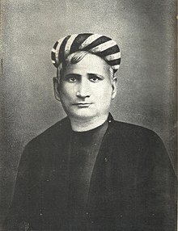

Bankim Chandra Chattopadhyay or Bankim Chandra Chatterjee (27 June 1838–8 April 1894) was a Bengali writer, poet and journalist.He was the composer of India's national song Vande Mataram, originally in Sanskrit stotra personifying India as a mother goddess and inspiring the activists during the Indian Independence Movement. Chattopadhyay wrote thirteen novels and several 'serious, serio-comic, satirical, scientific and critical treaties' in Bengali. His works were widely translated into other regional languages of India as well as in English.
Born to an orthodox Brahmin family, Chattopadhyay was educated at Hooghly Mohsin College founded by Bengali philanthropist Muhammad Mohsin and Presidency College, Calcutta. He was one of the first graduates of the University of Calcutta. From 1858, until his retirement in 1891, he served as a deputy magistrate and deputy collector in the Government of British India.
Chattopadhyay is widely regarded as a key figure in literary renaissance of Bengal as well as the broader Indian subcontinent. Some of his writings, including novels, essays and commentaries, were a breakaway from traditional verse-oriented Indian writings, and provided an inspiration for authors across India.
When Bipin Chandra Pal decided to start a patriotic journal in August 1906, he named it Vande Mataram, after Chattopadhyay's song. Lala Lajpat Rai also published a journal of the same name.
One of the many novels of Chattopadhyay that are entitled to be termed as historical fiction is Rajsimha (1881, rewritten and enlarged 1893). Anandamath (The Abbey of Bliss, 1882) is a political novel which depicts a Sannyasi (Hindu ascetic) army fighting the British soldiers. The book calls for the rise of Hindu nationalism. The novel was also the source of the song Vande Mataram (I worship my Motherland for she truly is my mother) which, set to music by Rabindranath Tagore, was taken up by many Indian nationalists, and is now the National Song of India. The plot of the novel is loosely set on the Sannyasi Rebellion. He imagined untrained Sannyasi soldiers fighting and beating the highly experienced British Army; ultimately however, he accepted that the British cannot be defeated. He categorically claimed that the British are not the enemy but friends; the Muslims are the real enemy. Hence, this novel is also termed communal in nature.The novel first appeared in serial form in Bangadarshan, the literary magazine that Chattopadhyay founded in 1872. Vande Mataram became prominent during the Swadeshi movement, which was sparked by Lord Curzon's attempt to partition Bengal into a Hindu majority West and a Muslim majority East. Drawing from the Shakti tradition of Bengali Hindus, Chattopadhyay personified India as a Mother goddess, which gave the song a Hindu undertone that would prove to be problematic for some Muslims.
Chattopadhyay's next novel, Devi Chaudhurani, was published in 1884. His final novel, Sitaram (1886), tells the story of a local Hindu lord, torn between his wife and the woman he desires but unable to attain, makes a series of blunders and takes arrogant, self-destructive decisions. Finally, he must confront his self and motivate the few loyal soldiers that stand between his estate and the Muslim Nababs army about to take over.
Chattopadhyay was married at a very young age of eleven, he had a son from his first wife, who died in 1859. He later married Rajalakshmi Devi. They had three beautiful daughters..